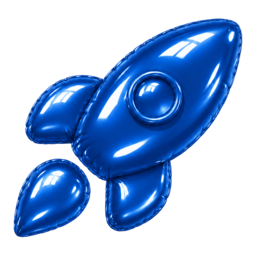

Task Launcher
Run the GitHub issues from projects using custom prompts.
- Use prompt template to set custom prompt specific to the project
- Run tasks directly from the side panel with the default agent
- Branches and work trees are automatically created
- Native UI adapts to the themes